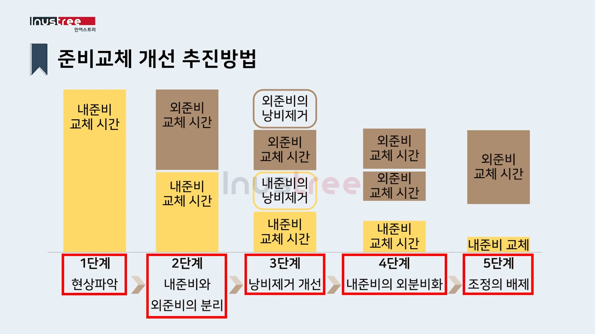

flowchart TB 가[생산성 분류] 가 --- 가1[노동 생산성] 가 --- 가2[설비 생산성] 가 --- 가3[원료 생산성] 가 --- 가4[부가가치 생산성] 가 --- 가5[자본 생산성]
생산성관리
생산성 지표
#97-3-4
- 생산성(Productivity)
-
- 단위 투입물(input)에 대한 산출물(output) 비율
- 제품 생산이나 서비스 제공에 있어 투입 대비 얼마만큼 산출이 이루어졌는지를 나타내는 지표
생산성 분류는 다음과 같다.
- 노동 생산성
-
- 노동력 투입으로부터 생산되어 산출되는 비율로써, 인력 투입 공수에 대한 효율을 평가
- 설비 생산성
-
- 설비 위주 장치산업에서 설비 총 가동시간 중 산출된 비율로 설비 효율을 평가
- 원료 생산성(수율)
-
- 원료를 투입하여 제품이 생산된 비율로 투입된 원료 중 몇 %가 생산되었는가를 평가
- 부가가치 생산성
-
- 한 사람 부가가치 금액이 얼마인가를 보는 것으로 부가가치액에 종업원 수로 나눈 것
- 자본 생산성
-
- 자톤 투입에 대하여 산출된 금액이 얼마인가를 나타내는 것
부가가치 산출은 다음과 같다.
- 부가가치 산출 방식
-
- 공제법
- 매출액에서 외부구입가치가 차지하는 비중을 공제하여 계산
- 순매출액 - (원재료비 + 지불경비 + 감가상각비 + 기초재고액 - 기말재고액) + 부가가치 조정액
- 가산법
- 일명 한국은행방식이라고도 하며 부가가치는 경상이익, 인건비, 순금용비용, 임차료, 조세공과 및 감가상각비로 구성되고, 손익계산서 및 제조원가 명세서에 나타난 해당 항목을 이용하여 산출
- 인건비(노동) + 임차료(건물, 설비) + 감가상각비 + 세금과 공과(정부, 지자체) + 순금융비용(자본) + 경상이익
- 공제법
노동 생산성
노동 생산성은 생산금액을 노동시간으로 나눈 값이다. 산출된 생산물 양과 지출된 노동 양 간 비율로 노동의 질적 수준을 나타낸다.
\[노동 생산성 = \frac{생산금액}{노동시간}\]
노동 생산성 종류는 다음과 같다.
flowchart TB 가[노동 생산성 종류] 가1[물적 노동생산성] 가2[가치 노동생산성] 가 --- 가1 & 가2
- 물적 노동생산성
-
- 일정 기간 내 생산된 산출량과 그 생산에 투입된 노동량 비율, \(\frac{산출량}{노동량}\)
- 일반적으로 1인당 또는 시간당 생산량 계념으로 사용
- 가치 노동생산성 (부가가치 생산성)
-
- 생산액을 노동량으로 나눈 값, \(\frac{생산량}{노동량}\) 또는 \(\frac{부가가치}{노동량(비용}\)
- 1인당 부가가치 생산성 = \(\frac{부가가치}{노동자수}\)
- 부가가치율 = \(\frac{부가가치}{총매출액}\)
노동 생산성 지표
노동생산성은 다음과 같이 구분할 수 있다.
flowchart LR 가[노동 생산성 지표] 나1[요소별 노동 생산성 지표] 나2[기타 노동 생산성 지표] 다1[노동 생산성] 다2[자본 생산성] 다3[부가가치율] --- 다31[부가가치/매출액x100] 다4[노동소득분배율] --- 다41[인건비/부가가치x100] 라1[1인당 부가가치] --- 라11[부가가치/종웝원수] 라2[1인당 매출액] --- 라21[매출액/종업원수] 라3[1인당 순이익] --- 라31[당기순이익/종업원수] 라4[총자본 투자효율] --- 라41[부가가치/총자본] 라5[자본집약도] --- 라51[총자본/종업원수] 라6[설비투자효율] --- 라61["부가가치/(유동자산-건설정운 자산)"] 라7[노동장비율] --- 라71["(유동자산-건설중인 자산)/종업원수"] 가 --- 나1 & 나2 나1 --- 다1 & 다2 나2 --- 다3 & 다4 다1 --- 라1 & 라2 & 라3 다2 --- 라4 & 라5 & 라6 & 라7
준비교체 개선활동
#97-1-1
준비교체 시간이란 현 제품 생산 종료 시점으로부터 다음 제품으로 교체/조정을 하여 완전히 양품이 생산되기까지의 시간을 말한다. 치공구 해체, 청소, 다음 제품에 사용할 치공구 준비, 금형류 준비, 세팅, 시가공, 조정, 측정 시간 등을 포함한다.
준비교체 시간 단축 필요성
시장 요구에 맞춰 다품종화 되면서 가동률이 저하되는 추이를 보였다. 빈번한 기종 교체에 대응 및 준비 교체 시간 단축으로 가동률 향상을 위해 준비교체 시간 개선이 필요하게 되었다.
준비교체 3대 낭비
flowchart TB 0[준비작업 낭비] --- 1[내준비교체<br>작업 낭비] & 2[외준비교체<br>작업 낭비] 1 --- 11[교환 낭비] & 12[조정 낭비] 2 --- 21[사전 준비 낭비] & 22[후처리 낭비]
내준비 시 교환 낭비, 조정 낭비가, 외준비 시 준비 낭비 발생한다.
- 교환 낭비
-
- 치공구 교환, Press 금형/성형 등 금형 준비, Drill 등 교환
- 조립라인의 조립품이나 부품 교체, 가공라인의 재료 교체 준비
- 조정 낭비
-
- 정밀 절살 가공이나 화확 장치 등에서 기준을 변경 및 조정하는 작업
- 준비 작업자 테크릭을 발휘할 수 있는 조정 작업
- 준비 낭비
-
- 생산 시작 전에 여러 가지 준비 작업
- 작업자나 기계 준비, 도면 확인, 청소 등 후처리를 포함
개선 절차

- 현상 파악
- 가동 분석을 통해 현 실태를 파악하고 현재 실시하고 있는 방법을 분석한다.
- 낭비제거
- 정리 정돈으로 상당한 시간을 줄일 수 있다.
- 내/외 준비 분리
- 내준비, 외준비, 로스 분리를 명확힌 한다. 반드시 설비를 정지시키지 않아도 가능한 작업은 외 준비로 한다.
- 내준비를 외준비화
- 내준비 작업을 개선하여 외준비화 한다.
- 내준비 교체 개선
- 내준비 단축을 위해 지그 공구 부착, 제거 작업 간소화/표준화, 카세트 방식 도입, 빠른 장금장치를 이용한 체겨 간소화, 중개 지그 활용, 병행 작업 실시, 조정 작업 폐지 등을 시도한다.
- 외준비 교체 개선
- 외준비 시간도 단축하여 준비교체 총 시간을 단축한다.
준비시간 단축 효과
준비교체 시간 단축은 로트 사이즈를 작게 하여 고객 요구에 맞는 생산 진행으로 재고를 줄이고 리드타임을 단축하여 시장 경쟁력을 향상시킬 수 있다.
- 재공품(WIP, Work In Process) 최소화 - 대기시간 단축
- 생산 소요시간(Lead time) 단축 - Lead time = 가공 + 정체시간
- 가동률 및 생산성 향상(준비 교체 유실 감소)
교체준비 시간 단축 추진 절차
- 준비 시간 실태 파악
- 준비 개선 추진팀 편성
- 현장 관찰 및 가동 분석
- 헛수고 없애기와 결론 발상법
- 개선 실시 계획 작성
- 개선 실시
- 평가결과 횡전재
Less Engineering
#97-1-2
낭비를 발생시키는 구체적인 현상을 완전히 제거하고자 하는 관점에서 시작된 것으로 개선 4원칙 중 가장 효과적인 배제에 주안점을 두고 적은 비용으로 큰 영영 성과를 달성하고자 하는 방안이다.
Less Engineering 유형
다음과 같은 유형이 있다.
- Walk Less - 보행 낭비 없애기
- Search Less - 찾는 낭비 없애기
- Air Less - 빈 공간 없애기
- Over stock Less - 과잉 재고 없애기
- Air Cut Less - 공구 절삭 낭비 없애기
- Conveyor Less - 불필요한 컨베이어 없애기
- Dust Less - 분진방지, 먼지 발생 원인 없애기
- Rough Motion Less - 불필요한 동작 없애기
작업순서 결정
#97-1-12
주문생산은 다양한 일감이 상이한 순서로 작업하므로 작업순서 결정과 부하 결정문제가 생산성에 영향을 미친다. 통상 공장에서는 작업 순서가 동일할 경우를 대비하여 서너개의 작업 우선순위 규칙(Priority rule), 작업배정규칙(Dispatching rule)을 함께 사용한다.
우선순위 규칙 평가 기준은 다음과 같다.
- 납기 이행
- 작업 진행 시간(flow time) 최소화
- 재공품(WIP) 최소화
- 기계/작업 유휴시간 최소화
단일 설비 일정 계획 기준 다음과 같은 작업 순서 결정 방식이 있다.
- 선착순 우선(FCFS)
- 최단 처리 시간법(SPT)
- 납기 우선법(DD)
- 최소 여유 시간법(s)
- 잔여 작업 최소 여유시간 우선 처리법(s/RO)
- 긴급률 법(CR)
n개 작업을 2대 기계에서 작업할 경우 우선 순위 규칙은 존슨법(Johnson’s rule)을 적용할 수 있다.
선착순 우선
최단 처리 시간 우선
납기 우선
최소 여유 시간 우선
잔여 작업 최소 여유 시간 우선
긴급률 우선
존슨법
존슨법은 두 개 사업장을 거치는 경우 또는 2대 기계에서 작업을 할 경우 우선순위를 결정하는 방법이다.
다음과 같은 가정과 기준으로 수행한다.
- 각 작업이 동일한 순서로 두 개 작업장을 거침
- 작업장(기계)1 -> 작업장(기계)2
- 최종 작업이 두 번째 작업장에서 완료되는 시간이 모든 작업이 끝나는 시간(makespan)이 최소가 되도록 작업 순서를 결정
- 두 작업장 총유휴 시간 최소화
우선 순위 규칙은 다음과 같다.
- 작업장별 작업 시간치를 표에 기입
- 작업장 1, 2에 관계없이 처리시간이 가장 짧은 작업(최소 작업시간) 선택
- 가장 짧은 처리 시간이 작업장1에서 발생하면 그 작업을 가장 앞 순위에 놓고, 작업장2에서 발생하면 가장 뒤 순위에 놓음
- 2.에서 순위가 결정된 작업은 고려 대상에서 제외
- 모든 작업 순서가 결정될 때까지 2와 3을 반복
| 작업 | 작업1(일) | 작업2(일) |
|---|---|---|
| A | 5 | 4 |
| B | 2 | 3 |
| C | 6 | 5 |
| D | 3 | 4 |
| E | 6 | 7 |
존슨법 규칙에 따라 작업 순서는 [B-D-E-C-A]로 결정된다. 작업순서에 따른 작업시간과 유휴 시간은 다음과 같다.
- 작업장1: B(2) + D(3) + E(6) +C6) + A(5) = 22(일)
- 작업장2: 유휴(2) + B(3) + D(4) + 유휴(2) + E(7) + C(5) + A(4) = 27(일)
작업장1은 22일만에 작업 완료되지만 작업장2가 27일 완료되므로 5일간의 유휴시간이 발생한다. 작업장2는 작업장1에서 완료되어야 진행할 수 있어 4일간의 유휴일이 발생한다.